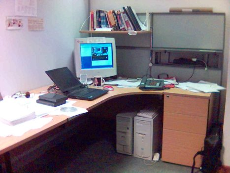

DOM Image Annotation
Flickr, the online photo
organiser application, has some very neat tricks up its sleeve.
Perhaps the neatest is its process of annotating an image by
highlighting specific areas of that image and attaching notes
to them. Very neat. It's done with a combination of DHTML and Flash
stuff. Gina at scribbling.net has put together an
example of how to
do something similar using DHTML. However, her outlined approach,
while nice, requires you to build a special rollover image with the
annotated areas clearly highlighted, and it uses onmouseover
and onmouseout attributes on lots of bits of the code. While
this works, it's not really following the
principles of
unobtrusive DHTML that make a script easy to implement. Perhaps we
can slightly improve upon it.
Image maps
Gina did hit upon the key point, though: marking out various bits of an image has been possible in HTML for ages, using a client-side image map. We've moved away from them to a certain extent these days (well, the CSS-and-web-standards lobby have; they seem to be a mainstay of graphics-heavy commercial table-driven sites still), but they're specifically designed for this purpose. Just to refresh your memory (if such a refresher is needed), this is how an image map works:
The image tag can take a usemap attribute, like so:
<img src="myimg.png" alt="My image" usemap="#mapname">
The usemap attribute points to a map which
demarcates parts of the image:
<map name="imgmap">
<area alt="" title="Buffy mug" nohref="nohref"
shape="rect" coords="170,150,210,180">
<area alt="" title="Crap books" nohref="nohref"
shape="rect" coords="170,10,320,80">
</map>
Note that the name of the <map> is the
same name as that in the usemap attribute of the original
<img>, except that the usemap takes a
preceding # symbol.
Each <map> is composed of areas, which
have coords and a shape. While shape
can be esoteric things like circle and poly, we'll
concern ourselves only with rectangular areas here, which have
a shape of rect. The coords attribute
takes four numbers, comma-separated: coords="l,t,r,b", where
the four numbers are left, top,
right, and bottom: pixel positions,
measured relative to the top-left of the image. Note that this is
not CSS: these are not in the CSS top-right-bottom-left order!
There are plenty of resources out there on the web about setting up
image maps, and indeed programs specifically to construct them given
an image.
So, what we want is to have those areas appear on an image
when we mouse over it.
Like this, in fact:

How do we use it
Much like all the other unobtrusive scripts, you don't need to
do very much to make this happen. You do need to embed the
<img> tag in your page as normal, and construct an
image map and put that in the document too, as described above. Your
image should also have a class of annotated.
Your areas must have a title
attribute which is the tooltip that you want to appear when mousing
over that area.
Then, download the JavaScript library and stylesheet and include them in your page as normal:
<script type="text/javascript" src="annimg.js"></script>
<link rel="stylesheet" href="annimg.css">
and that's everything. All done.
Nicer titles
Note that the tooltips that appear, associated with each area, are ordinary browser tooltips generated from thetitle element.
While these are serviceable enough, you might want something a little
cleverer. The DOM Annotated Images script integrates nicely with my
nicetitles:
if the NiceTitles script is also included on the page (which it may
already be, if you're already using them) then the tooltips for the
image annotations will appear as NiceTitles.
Updates to the script
- 2004-11-16
- Explicitly specify that the image must have class
annotated. Thanks to Jeff Gates. - 2004-11-09
- Updated to take account of text size changes (or other alterations to the flow of the page) after initial load, so that the areas don't get offset. Thanks to Mac Steve.
Stuart Langridge, November 2004